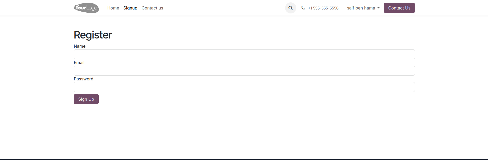

Website User Signup
This module adds a public registration form to your Odoo website, allowing users to sign up and become portal users.
Features
- Public registration page at
/signup
- Creates users with portal access only
- Bootstrap-styled form
Screenshots

License
LGPL-3